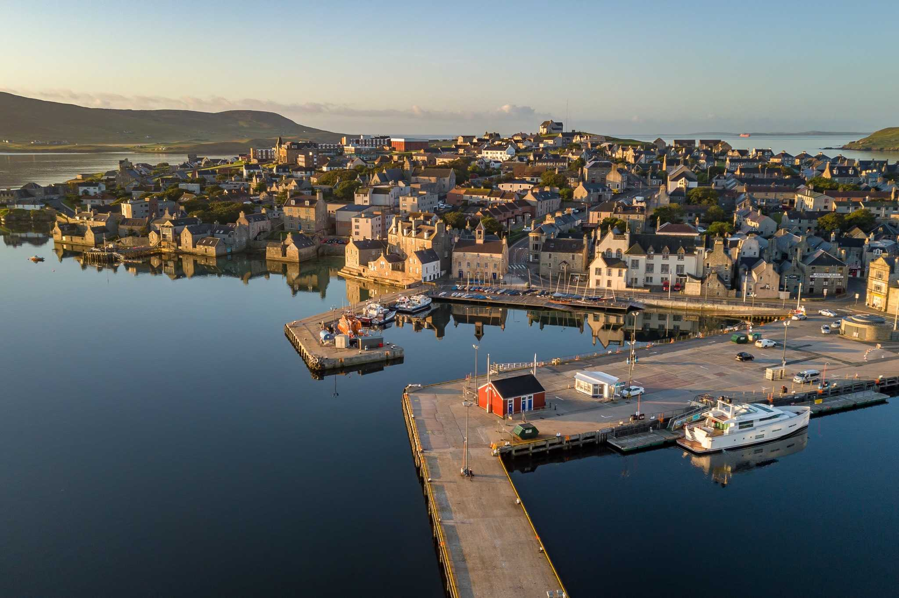

Description of Shetland
“Shetland” is a gripping British crime drama television series based on the novels by Ann Cleeves. Set in the remote and picturesque Shetland Islands, the show follows Detective Inspector Jimmy Perez as he investigates complex murder cases against the backdrop of stunning landscapes and a close-knit community. Filmed on location in the Shetland Islands, the series beautifully captures the rugged beauty of this Scottish archipelago, with its dramatic cliffs, rolling hills, and wild coastline, adding an atmospheric layer to the compelling storytelling. “Shetland” is celebrated not only for its compelling mysteries but also for its authentic portrayal of this unique and breathtaking setting.
Ann Cleeves
The Shetland series is a bestselling, critically-acclaimed series of crime novels by Ann Cleeves, which has also been made into a hit TV series on BBC One starring Douglas Henshall as Detective Inspector Jimmy Perez, now in its sixth series.
Where does Shetland take place?
Shetland, also called the Shetland Islands and formerly Zetland, is an archipelago in Scotland lying between Orkney, the Faroe Islands, and Norway. It is the northernmost region of the United Kingdom. The islands lie about 80 km to the northeast of Orkney, 170 km from mainland Scotland and 220 km west of Norway.
